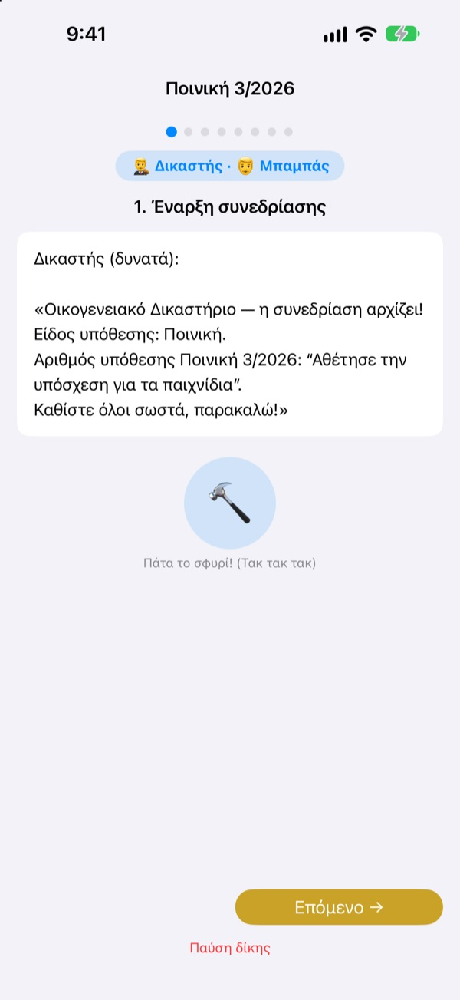
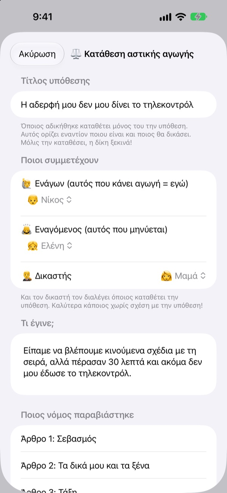
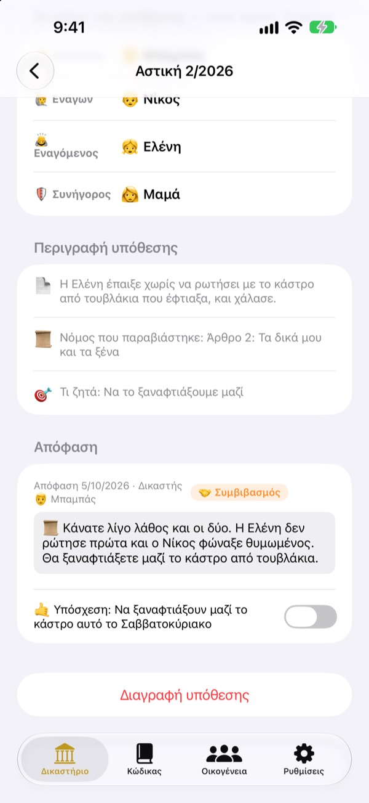
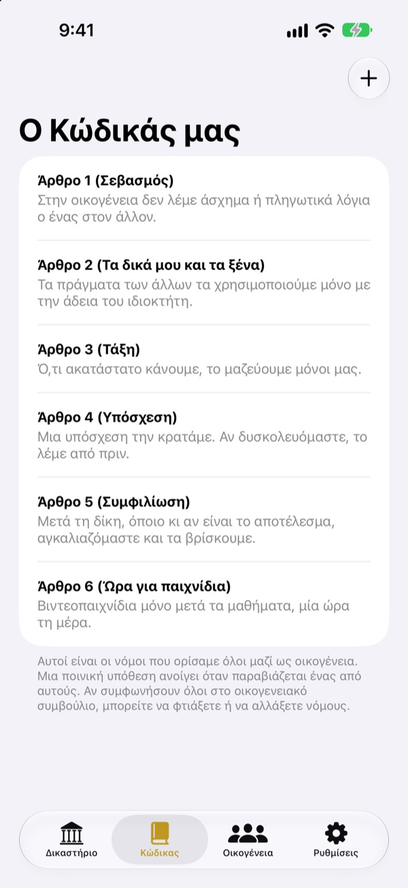

Είναι άδικο;
Χωρίς δάκρυα, στο δικαστήριο.
Το παιδί καταθέτει μόνο του την αγωγή ως ενάγων, και η οικογένεια μοιράζεται τους ρόλους του δικαστή και του δικηγόρου. Σε κάθε βήμα ένα σενάριο λέει ποιος έχει σειρά και τι λέει, οπότε ακόμη και η πρώτη δίκη κυλά σαν αληθινή.
Χωρίς διαφημίσεις, αγορές ή εγγραφή. Όλα μένουν σε αυτή τη συσκευή.

Κάνε μια δίκη
Μια σύντομη υπόθεση: «Ο αδερφός μου δεν μου δίνει το τηλεχειριστήριο». Άλλαξε πάνω το επίπεδο λεξιλογίου, χτύπα το σφυρί και ξεκίνα το χρονόμετρο. Έχει ήχο, έλεγξε την ένταση.
«Αυτός άρχισε!» Κουράστηκες να είσαι πάντα ο διαιτητής;
Όταν ξεσπά καβγάς, σχεδόν πάντα αποφασίζει ένας μεγάλος. Όποιος χάνει κλαίει γιατί του φαίνεται άδικο, κι όποιος κερδίζει δεν ξέρει καλά γιατί. Το Οικογενειακό Δικαστήριο δίνει στα παιδιά μια σειρά: να πουν όλη τη δική τους πλευρά και να ακούσουν την άλλη ως το τέλος. Και η απόφαση κλείνει με μια υπόσχεση, όχι μόνο με τιμωρία.
Όποιος αδικήθηκε κάνει μόνος του αγωγή
Όποιος θεωρεί κάτι άδικο γίνεται ενάγων και καταθέτει την αγωγή. Εναντίον ποιου και ποιος θα δικάσει, το αποφασίζει αυτός. Τα παιδιά μπορούν να κάνουν αγωγή ακόμη και στη μαμά και στον μπαμπά.
Είδες κάποιον να παραβαίνει κανόνα του σπιτιού; Γίνε εισαγγελέας και άσκησε ποινική δίωξη. Δικαστής μπορεί να είναι μόνο όποιος δεν είναι ενάγων ή εναγόμενος.

Η απόφαση κλείνει με υπόσχεση
Μαζί με την απόφαση ορίζεται μια υπόσχεση ή ποινή, που σημειώνεται όταν εκπληρωθεί. Οι υποθέσεις που έκλεισαν γίνονται οι δικές σας προηγούμενες αποφάσεις.
Οι προτεινόμενες τιμωρίες ξεκινούν από το να διορθώσεις το κακό και να φτιάξεις τις καρδιές, πιο πολύ επανόρθωση παρά τιμωρία. Λιγότερα παιχνίδια ή τηλεόραση έρχονται τελευταία.

Το σπίτι σας, οι νόμοι σας
Γράψτε ως άρθρα τους κανόνες που συμφωνήσατε, όπως σεβασμό, τακτοποίηση και τήρηση υποσχέσεων, και προσθέστε ή αλλάξτε τους όποτε θέλετε. Στην αγωγή επιλέγεται ο νόμος που παραβιάστηκε.
Το «Μάθε για το δικαστήριο» εξηγεί τι κάνουν ο δικαστής, ο ενάγων, ο εισαγγελέας και ο δικηγόρος, και πώς κυλά μια δίκη.

Ξεκινάς σε τρία βήματα
- 1
Πρόσθεσε την οικογένεια
Αρκεί ένα όνομα και ένα emoji. Χωρίς λογαριασμό.
- 2
Κατέθεσε υπόθεση
Αδικία σημαίνει αστική υπόθεση, παράβαση κανόνα ποινική. Μετά διάλεξε δικαστή.
- 3
Άνοιξε τη δίκη
Ακολούθησε το σενάριο, κράτα χρόνο με το χρονόμετρο και ανακοίνωσε την απόφαση με το σφυρί.
Λέξεις που μεγαλώνουν μαζί με το παιδί
- Δικαστής
- Απλά λόγια: Διαιτητής · Νομικοί όροι: Πρόεδρος Δικαστηρίου
- Ενάγων
- Απλά λόγια: Όποιος αδικήθηκε · Νομικοί όροι: Ενάγων
- Εναγόμενος
- Απλά λόγια: Όποιος απαντά · Νομικοί όροι: Εναγόμενος
- Εισαγγελέας
- Απλά λόγια: Όποιος το ανέφερε · Νομικοί όροι: Εισαγγελέας
- Κατηγορούμενος
- Απλά λόγια: Όποιος απαντά · Νομικοί όροι: Κατηγορούμενος
- Συνήγορος
- Απλά λόγια: Βοηθός · Νομικοί όροι: Συνήγορος
- Αστική
- Απλά λόγια: Αδικία · Νομικοί όροι: Αστική
- Ποινική
- Απλά λόγια: Αθετημένη υπόσχεση · Νομικοί όροι: Ποινική
Διάλεξε το επίπεδο λεξιλογίου στις Ρυθμίσεις και οι λέξεις στην οθόνη και στο σενάριο αλλάζουν όλες μαζί. Δοκίμασε τα Απλά λόγια για το νηπιαγωγείο και το Βασικό για το δημοτικό.
Συχνές ερωτήσεις
Από ποια ηλικία;
Κάθε παιδί που διαβάζει μπορεί να παίξει με έναν γονιό. Με το σενάριο, τις οδηγίες και το επίπεδο Απλά λόγια, συμμετέχουν και τα μικρότερα, αν ένας μεγάλος διαβάζει δυνατά.
Είναι πραγματικά δωρεάν;
Ναι. Χωρίς διαφημίσεις και χωρίς αγορές που ξεκλειδώνουν λειτουργίες. Στις Ρυθμίσεις υπάρχει προαιρετικό φιλοδώρημα για τον δημιουργό, που δεν ξεκλειδώνει ούτε κλειδώνει τίποτα.
Χρειάζεται ίντερνετ;
Όχι. Δίκες και αρχεία λειτουργούν εντελώς εκτός σύνδεσης. Ίντερνετ και σύνδεση στο iCloud χρειάζονται μόνο για να στείλεις σχόλια από τις Ρυθμίσεις.
Πού αποθηκεύονται τα αρχεία;
Οικογένεια, νόμοι, δίκες και αποφάσεις μένουν μόνο στη συσκευή και δεν πάνε σε κανέναν διακομιστή. Στον δημιουργό φτάνουν μόνο σχόλια που στέλνεις εσύ και ανώνυμα στατιστικά χρήσης που δεν σε ταυτοποιούν.
Μπορώ να κρατήσω αντίγραφο ή να τα μεταφέρω;
Με την «Αποθήκευση δεδομένων» στις Ρυθμίσεις εξάγεις τα πάντα σε αρχείο, και με τη «Φόρτωση δεδομένων» στην άλλη συσκευή όλα επιστρέφουν όπως ήταν. Φορτώνουν και τα αντίγραφα της παλιάς έκδοσης ιστού.
Δουλεύει σε iPad;
Ναι, σε iPhone και iPad. Μια μεγάλη οθόνη είναι ιδανική όταν όλη η οικογένεια κάθεται γύρω.
Κι αν οι ποινές γίνουν πολύ αυστηρές;
Όταν ο εισαγγελέας ζητά ποινή, το σενάριο θυμίζει να μην είναι βαριά αλλά εφικτή. Οι προτάσεις ξεκινούν από την επανόρθωση: να διορθώσεις το κακό, να φτιάξεις τις καρδιές, να δεις τα πράγματα από τη μεριά του άλλου.
Πώς τα σβήνω όλα;
Αν διαγράψεις την εφαρμογή, χάνονται μαζί όλα τα αρχεία της συσκευής. Τίποτα δεν βγήκε ποτέ από αυτήν, οπότε τίποτα δεν μένει αλλού. Για να σβηστούν σχόλια που έστειλες, στείλε μας email.
Σφάλματα, ιδέες ή οτιδήποτε άλλο; Γράψε στο leeo@kakao.com. Μπορείς επίσης να στείλεις σχόλια από τις ρυθμίσεις της εφαρμογής.